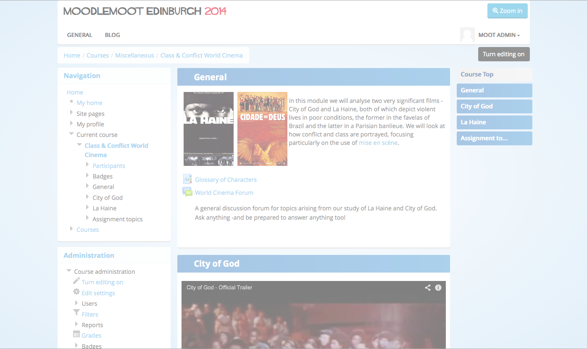

Making Moodle Multi-device Friendly with Bootstrap
Making Moodle Multi-device Friendly with Bootstrap
I'm a developer, designer and fulltime geek.
 Bas Brands, MoodleMoot, Edinburgh, 2014
Bas Brands, MoodleMoot, Edinburgh, 2014
What do we all have in common?
 Photo Credit: d_vdm cc
Photo Credit: d_vdm cc
You (often) interact differently on each device
- Your read texts on your mobile while traveling
- You write on you laptop
- You watch youtube on your tablet
- You game on your gaming console
Learners and their phones have a personal relationship
- Messaging friends
- Taking pictures
- Face to face calls
- Knowing where you are
Your LMS is already being used on multiple devices.
But the results are not always a success
- Pinching and Zooming
- Clicking tiny links
- Hard to read
Choosing the right theme is a first step

- No Zoom
- Focused on most important element
- Easy to read
Somebody had a great idea
 Picture of @fat on twitter
Picture of @fat on twitter
Bootstrap and the Moodle bootstrap theme
- The Bootstrap framework was built by @fat and @mdo
- David Scotson and myself developed the Moodle bootstrap theme
- Then it got adopted into Moodle core (bootstrapbase)
- And now it's going to be the default theme for Moodle
CSS provides a set of styled elements
Image by Bas Brands
JavaScript makes Bootstrap interactive
 Image by Bas Brands
Image by Bas Brands
Image by Bas Brands
Okay maybe not, a team was needed

- Developers
- Testers
- Users
- Github
Github Octodex
Moodle is now in Core from Moodle version 2.5

City University London


King Faisal University / Shabaka Training
Try Bootstrap 3 on Moodle.moodlemoot.ie




The new Bootstrap 3 theme.
- Complete rewrite
- New settings
- Auto generated CSS
- Bootswatches


- The webvideo activity
- The html5video filter
- future: responsive images filter

- Easily add video's to page
- Prevent loading Youtube / Vimeo JS on page load
- Shows in page or in overlay panel


- Upload vidoes in a Moodle course
- Plays on iOs devices
The responsive images filter
Photo Credit: marcoderksen


 Photo Credit: Bas Boerman cc
Photo Credit: Bas Boerman cc
 Photo Credit: tulensrma
Photo Credit: tulensrma